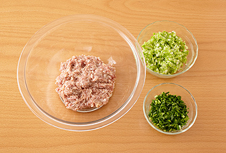
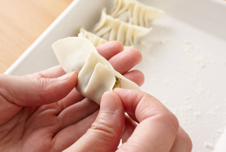
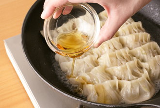

基本の餃子の作り方
みんな大好き！いくらでも食べられる！

家族や友人で集まったら、みんなで餃子を作ってパーティをするのも楽しいですね。
蒸し焼きにした後、ごま油を回し入れ、しっかり水分を飛ばして焦げ目をつけるのがポイントです。
材料 （4人分）
| 餃子 | |
|---|---|
| 豚ひき肉 | 150g |
| キャベツ | 3枚（150g） |
| にら | 5～6本 |
| 餃子の皮 | 1袋（25～30枚） |
| 塩 | 小さじ1/3 |
| サラダ油 | 大さじ1/2 |
| ごま油 | 小さじ1 |
| Ａ | |
|---|---|
| にんにく（みじん切り） | 1かけ分 |
| しょうが（みじん切り） | 1かけ分 |
| 酒 | 大さじ1 |
| ごま油 | 大さじ1 |
| しょうゆ | 小さじ2と1/2 |
| 砂糖 | 小さじ1/2 |
| 塩 | 少々 |
| こしょう | 少々 |
作り方
１．下ごしらえ

キャベツはみじん切りにし、塩をふってもむ。 しんなりしたら水気をしぼる。 にらは5ミリに切る。ボウルにひき肉とAを入れてよく混ぜる。さらに、キャベツ、にらも加えて混ぜ合わせる。
２．包む

餃子の皮に1のひき肉だねをのせ、 端を水で濡らして折り畳み、ひだをよせながら包む。 残りも同様にする。
３．焼く

フライパンにサラダ油を入れて中火 にかけ、餃子を並べる。熱湯3/4カップ（分量外）を注ぎ入れ、 ふたをする。水気がほとんどなくなったらふたを外し、 ごま油を回しかける。 こんがりと焼き目がついたらでき上がり。好みで酢じょうゆなどをつけて食べる。